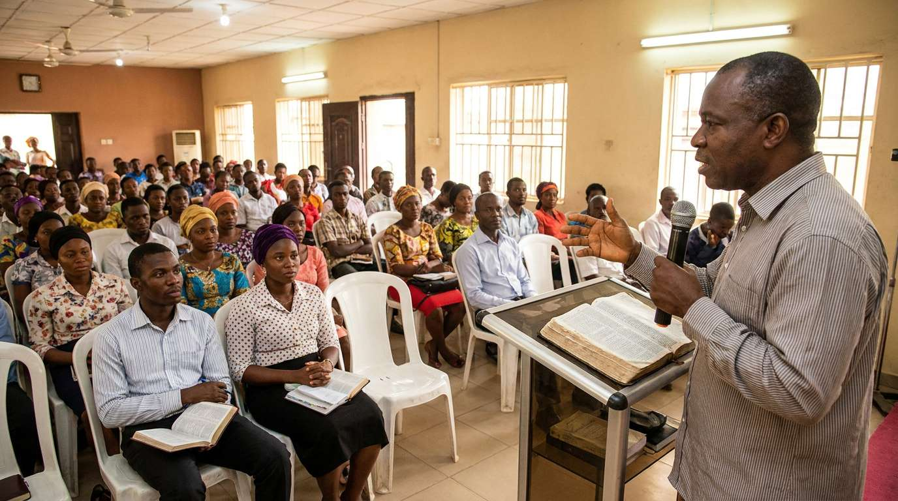

Evangelism & Discipleship
Reaching children, youths, and adults with the Gospel and helping them grow in faith and their relationship with Christ.
Equipping Pilgrims and Volunteers with leadership and other skills needed in the core ministry areas.
The Pilgrims Ministry provides opportunities for believers to deepen their relationship with Christ through Bible study, discipleship, fellowship, prayer, evangelism, and practical Christian training.
It seeks to equip and encourage believers to grow spiritually, live out their faith, and become effective witnesses and agents of transformation in their families, churches, workplaces, and communities.

Reaching children, youths, and adults with the Gospel and helping them grow in faith and their relationship with Christ.
Taking the Gospel and biblical values to schools through school visits, fellowship, mentoring, and special programmes.
Encouraging people to read, study, understand, meditate on, and apply God's Word in their daily lives.
Equipping members, volunteers, and Christian workers with biblical knowledge and practical skills for effective service.
Reaching individuals and families with the Gospel through evangelistic outreaches and family life programmes.
Providing opportunities for believers to fellowship, encourage one another, and seek God together through prayer.
Connect, participate and discover opportunities for purposeful spiritual growth.